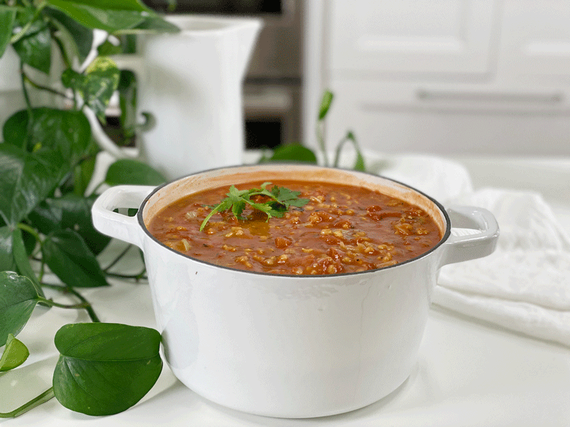

End of Week Challenge: Soup Challenge #3 | Leftovers | Oil-Free
Lately, Bob and I have been doing a good job of eating up all of the leftovers throughout the week, leaving me with nothing to toss together for my soup challenges, but today, I finally landed some ingredients that needed to be used up. I grabbed the ingredients, stirred them together in a large stockpot, and let it simmer. Ingredients included: 2 1/2 cups Spanish rice, 6 1/2 cup vegetable broth, 4 cups diced green cabbage, 1 (14.5 oz) can fire-roasted diced tomatoes, and 2.5 cups marinara sauce.

I am quickly learning that when it comes to making soup, a person really can’t go wrong. Once the leftovers go into the pot, I give it a taste test, adding whatever is needed to balance out the flavors. I hope these quick posts bring some inspiration to your kitchen. I am starting to HOPE that there will be leftovers come Sunday so I can create some type of soup again. A one-time-one-pot-wonder! blessings, amie sue
© AmieSue.com